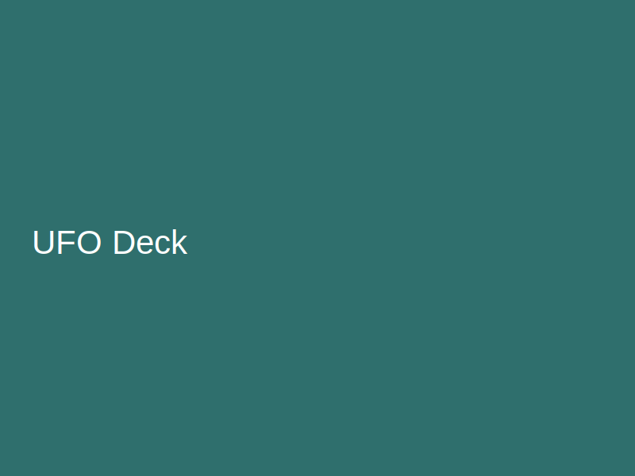
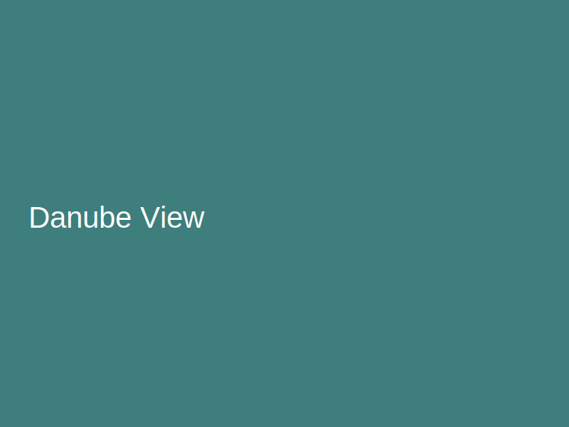

← Back to Places of Interest
UFO Observation Deck (SNP Bridge)
Viewpoint
Futuristic tower with 360° views and a cafe.
Curiosities
- The tower resembles a flying saucer and is a city icon.
- Sunset is the best time for photos over the river.

